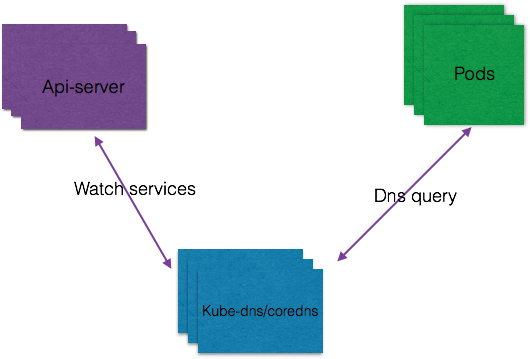
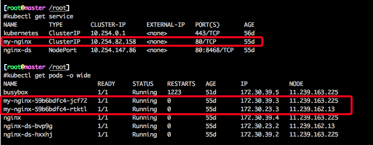
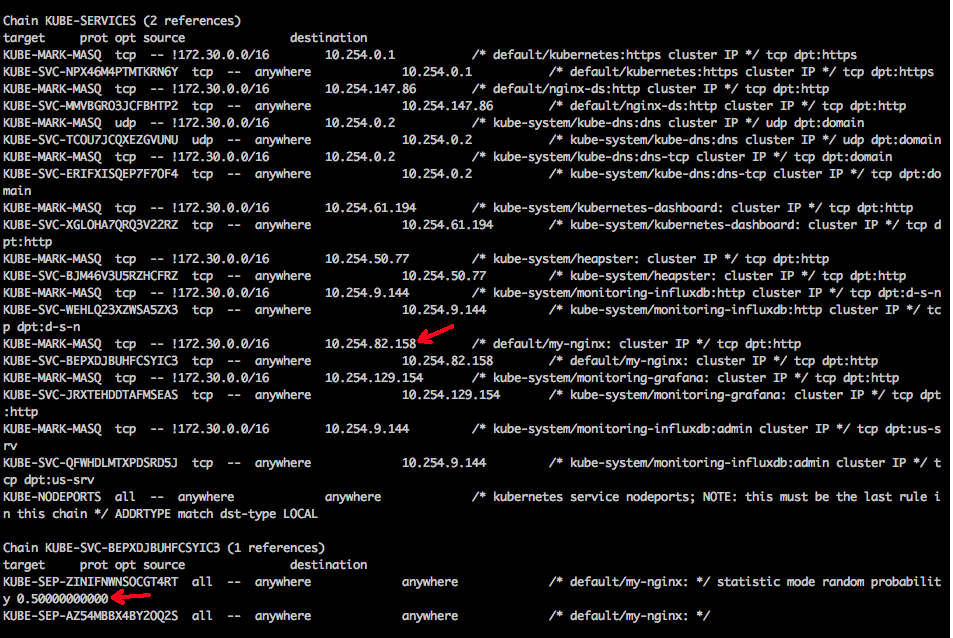
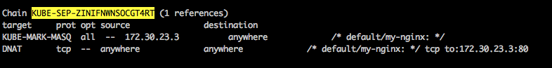
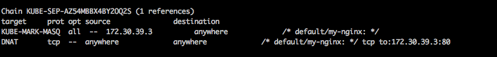
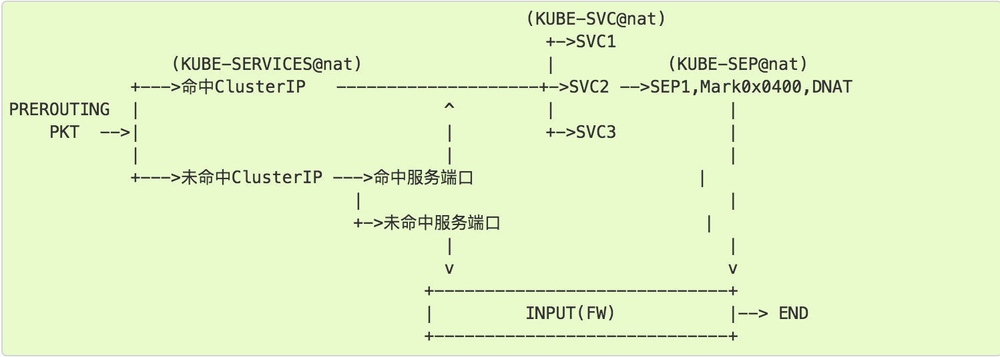
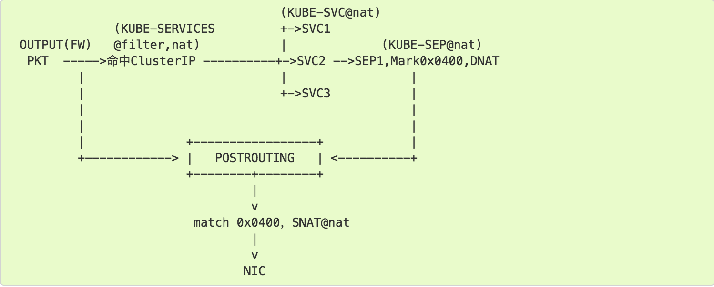
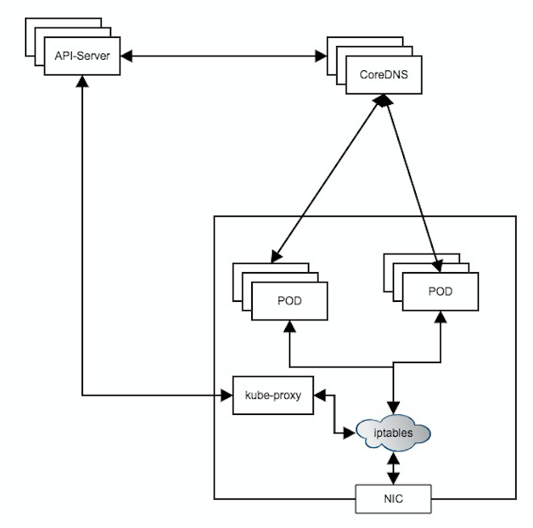

Introduction
本文探究kubernetes架构中，服务发现的具体工作原理，涉及到service定义、服务发现与coredns，kube-proxy工作原理等。
Service
kubernetes架构中，Service是对一组提供相同功能pod的抽象。Service通过标签选取服务后端。Service有四种类型：
- ClusterIP: 默认类型，为服务自动分配一个虚拟ip，该ip仅集群内部可见
- NodePort: 在ClusterIP的基础上，为Service在每台机器上绑定一个端口，外部请求可以通过NodeIP:NodePort访问服务
- LoadBalancer: 在NodePort的基础上，通过云服务厂商创建一个外部的负载均衡器
- ExternalName: 把服务通过CNAME的方式转发到制定的域名。
创建Service
- 一般，在创建服务时，需要指定selector，该selector会和特定label关联，通过和pod的label对比，选择相应的pod作为该服务的endpoints；
- 如果不指定selector，可以自己定义endpoint，需要创建一个和Service同名的Endpoints资源，在endpoint中配置指定的ip和端口；
- 还有一种情况不需要指定selectors，就是通过DNS CNAME方式把服务转发到指定的域名；
headless 服务
headless服务是指不需要ClusterIP的服务，在创建服务时指定spec.clusterIP=None, 包括两类：
- 不指定selectors，但设置externalName；
- 不指定selectors，通过A记录设置后段endpoint列表；
Service Discovery
服务发现分两种类型：
- 环境变量
- kubelet 会为每个活跃的 Service 添加一组环境变量，要求 Pod 想要访问的任何 Service 必须在 Pod 自己之前被创建
DNS
- DNS 服务器监视着创建新 Service 的 Kubernetes API，从而为每一个 Service 创建一组 DNS 记录, k8s体系中，DNS服务发现的结构如下图：

如上图所示，kube-dns 或 coredns会watch api-server上Service的变化，并根据规则自动生成DNS A记录。
- DNS 服务器监视着创建新 Service 的 Kubernetes API，从而为每一个 Service 创建一组 DNS 记录, k8s体系中，DNS服务发现的结构如下图：
Kube-proxy
用户创建service后，k8s会为这个LB提供一个IP，一般称为cluster IP。 kube-proxy的作用主要是负责service的实现，具体来说，就是实现了内部从pod到service和外部的从node port向service的访问。
kube-proxy内部实现原理主要是使用iptables规则，更改filter和nat表。filter表中增加KUBE-FIREWALL和KUBE-SERVICES两个规则链。所有出的报文都经过KUBE-SERVICES，如果没有找到endpoint，则丢弃报文。nat表则设置的规则比较多，主要是各种跳转，下图1中给出了部分。nat表的处理主要步骤为：
- inbound：在PREROUTING阶段，将所有报文转发到KUBE-SERVICES
- outbound：在OUTPUT阶段，将所有报文转发到KUBE-SERVICES
- outbound：在POSTROUTING阶段，将所有报文转发到KUBE-POSTROUTING
以my-nginx服务为例，该服务clusterIP为10.254.82.158，有两个pod，ip分贝为172.30.39.3和172.30.23.8，如下图：

使用sudo iptables -t nat -L命令查看nat转发表，只截出了相关的部分，如下图1。
- 首先pod通过dns查询到clusterIP 10.254.82.158，然后发起调用；
- 请求进入KUBE-SVC-BEPXDJBUHFCSYIC3
- KUBE-SVC-BEPXDJBUHFCSYIC3配置了两个pod的概率，0.5
然后请求按照一定概率被转发到另个目的pod，如图2和图3

图1 
图2 
图3
综上，数据包发到Node的处理过程：

Node发出的包的处理过程：

CoreDNS
CoreDNS在k8s中主要负责把Service转换成DNS域名并添加相应的A记录。CoreDNS支持标准的dns协议，插件化，支持多种数据源。

Conclusion
综上，本文简单介绍了kubernetes体系中，服务发现相关的概念及原理，包括服务类型、服务定义、服务发现方式及kube-proxy的工作原理。